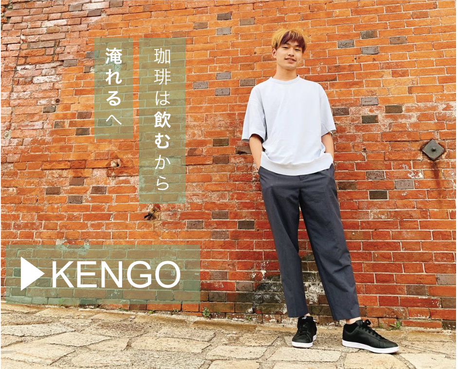
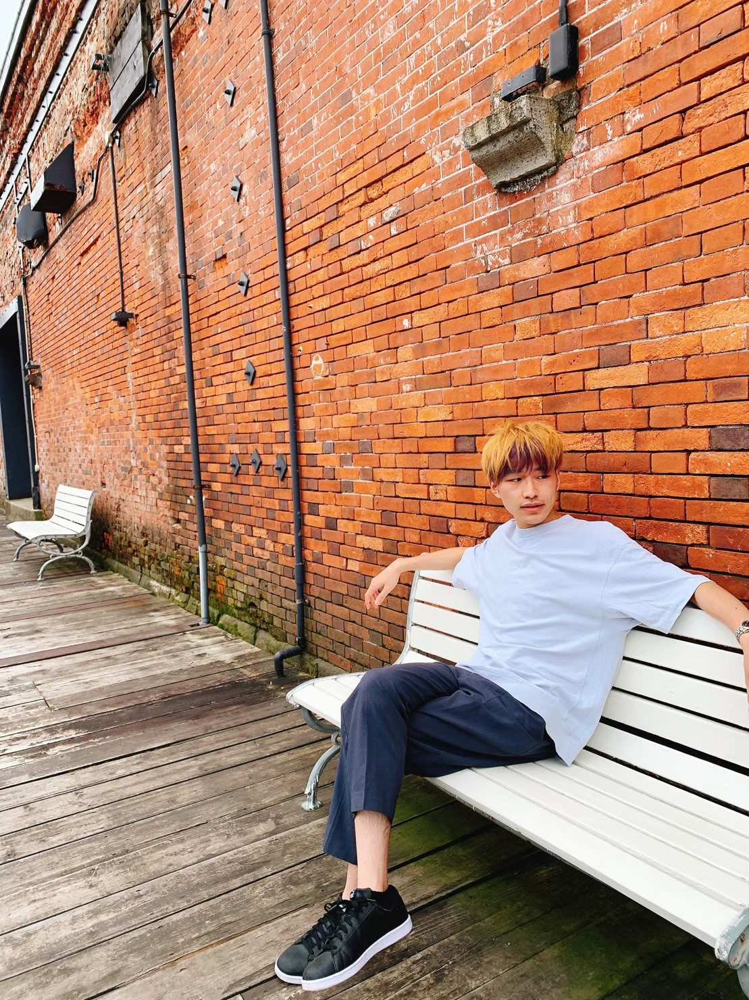

「日々の繰り返しの中に新しい発見があるんです」話題のクリエイター「KENGO」の日常に迫る。
2022/10/02

〜〜〜〜〜〜〜〜〜〜〜〜〜〜〜〜〜〜〜〜〜〜〜〜〜〜〜〜〜〜〜〜〜〜〜〜〜〜〜〜〜〜〜〜
埼玉県所沢市を拠点に活躍するクリエイター、KENGO。その活動の幅は広く業界において彼を知らない者はいない、今最もHOTな若者の一人だ。
今回PICK UP FUTURE取材班は彼のリアルを取材した。

クリエイター KENGO
独自の発想力でこれまで多くの作品を世に創出してきましたが、そのアイデアはどのようにして生まれるのでしょうか。
KENGO 何か特別なことはしてないんです。毎日決まった時間に起きて、決まった時間にご飯を食べる。そうしていつも通りの生活を送っていると良いアイデアが浮かんでくるんですよね。
どんな時に良いアイデアが浮かぶんですか。
KENGO 一番は朝珈琲を淹れているときですかね。朝は必ず珈琲を自分で淹れて飲むんです。ハンドドリップで豆を挽くところからやるんですよ。
それは大変ですね
KENGO 確かに結構大変かもしれません(笑)。でもやっぱり時間をかけて淹れた珈琲って美味しいんですよね。他の人よりこだわりはすごいかもしれないです。